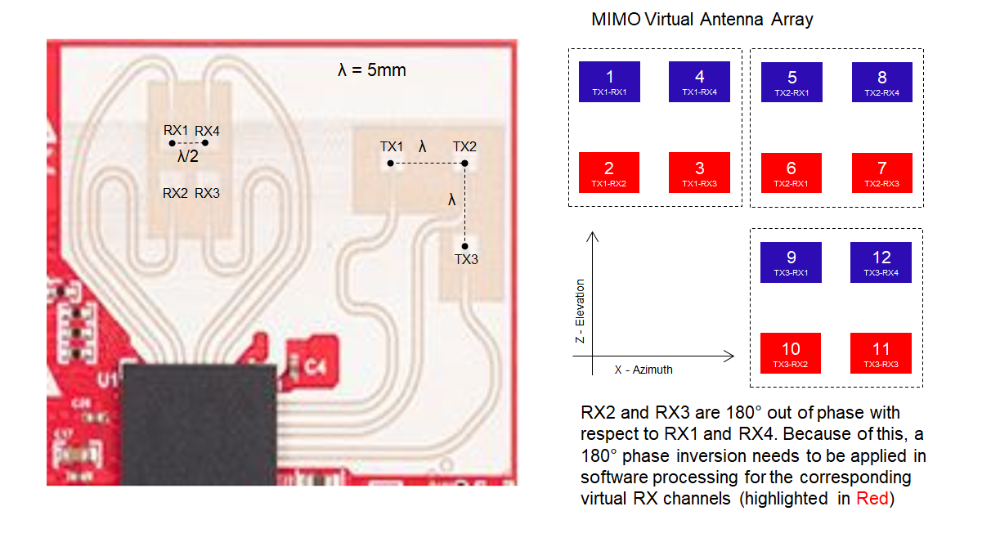
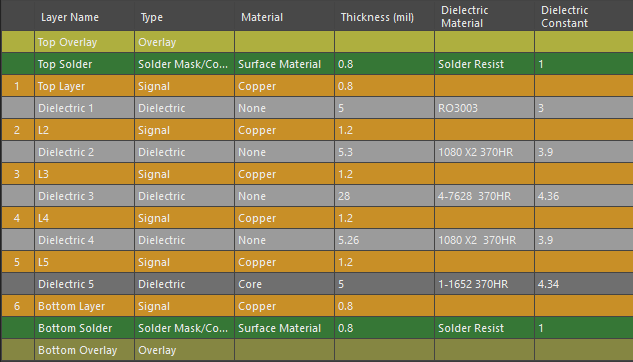
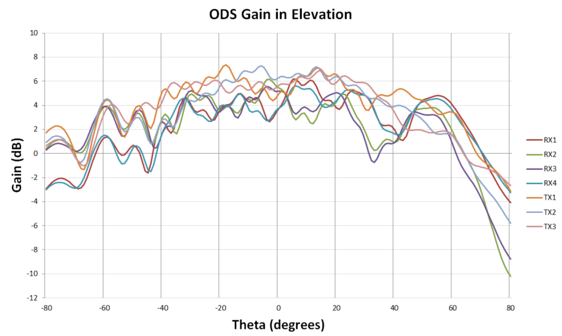
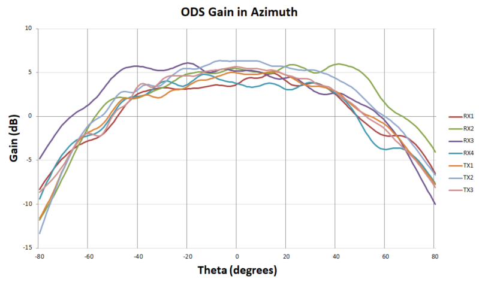

Introduction
============
IWR6843ODS EVM antenna is designed to be operated in 60GHz frequency range.
The IWR6843ISK-ODS is an easy-to-use mmWave sensor evaluation kit with a short-range antenna with wide field of view (FoV). This is useful in overhead people counting and tracking use cases.
IWR6843ODS EVM Antenna Picture & Dimensions
=============================================

The antenna peak gain of IWR6843ISK EVM Antenna is about 5 dBi across the operating frequency band of 60 GHz.
For more details about this EVM, please refer to the following link:
http://www.ti.com/tool/IWR6843ISK-ODS
IWR6843ODS EVM Stackup
========================
Please refer to below PCB stackup details for IWR6843ODS Antenna.

The mmWave layer is Rogers RO3003 with LoPro copper. ED (electro-deposited) copper is not a suitable material for mmWave frequencies.
Detailed layout of this antenna with stackup are available for you to download and reuse at the following link:
http://www.ti.com/lit/zip/swrc356
Simulated Radiation Patterns
============================
Simulated radiation patterns of IWR6843ISK EVM Antenna for Elevation and Azimuth can be seen below.


In the above pictures X axis represents the angle (in degrees) and Y axis represents the gain (in dB).
Manufacturing Guidelines
========================
The details on manufacturing this antenna can be found in the “TI mmWave Radar Sensor RF PCB Design, Manufacturing and Validation Guide" - http://www.ti.com/lit/pdf/spracg5
Board Manufacturer
==================
Streamline Circuits - http://streamlinecircuits.com/
Material Details
================
Rogers Corporation - https://www.rogerscorp.com/documents/722/acs/RO3000-Laminate-Data-Sheet-RO3003-RO3006-RO3010.pdf